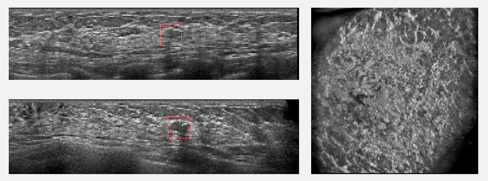

Automatic Detection of Breast Lesions in Automated 3D Breast Ultrasound with Cross-Organ Transfer Learning

Published 22 May 2024
Breast cancer is a widespread disease that endangers the declaration, effective detection and diagnosis methods are needed to improve the prognosis of patients. At the present stage, most breast cancer screening relies on 2D breast ultrasound, which requires radiologists to imagine the 3D composition of breast lesions. Automated 3D Breast Ultrasound (ABUS) solves this problem very well, and more and more computer-assisted diagnosis (CAD) software developed for ABUS is emerging to reduce the burden on radiologists. However, due to the relatively small popularity of ABUS and the protection of patient privacy by laws and regulations, training CAD software often encounters the problem of small datasets, which limits the software’s performance.
We proposed a cross-organ and cross-modality transfer learning method. The detection experience of lung nodules was transferred to the detection of breast lesions and compared with the results transferred from the breast MRI and ABUS datasets. And we also proposed two contrastive learning methods based on BI-RADS grading, which perform contrastive learning at both lesion-level and grade-level. We explored the possibility of using clinical indicators instead of gold standards in deep learning.
The experimental results on lung nodules, breast Magnetic Resonance Imaging (MRI), and ABUS datasets show that the detection experience of transferring lung nodules in breast cancer detection tasks effectively improves the model’s performance, with average sensitivity increased by up to 4.82%. In the ABUS dataset with a relatively large amount of data, transferring lung nodule detection experience achieved better results compared to transferring breast MRI detection experience, performance improvement increased by 1.03%. The experimental results on the ABUS dataset showed that both methods helped improve model performance, and the contrastive learning method at the lesion-level showed better performance, with a maximum sensitivity improvement of 3.38%.
Project leaders
Zhengrui Huang
Partner Organisations
杭州市第一人民医院
Project Example
Predict case from our model, the red box represents the possible lesions predicted by our model.
© Generalized Electric Medicine 2023 of Macao polytechnic university.
The Generalized Electric Medicine is part of the Macao polytechnic university.